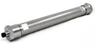
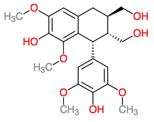

<!DOCTYPE html>
<html>
    <head>
        <title>Lauriane Sindt</title>

        <link href="./formationstyle2.css" rel="stylesheet" media="all" type="text/css"> 

    </head>

    <body >
        <div id="intro">
            <div class="top">
                <div class = "ls" >Lauriane Sindt</div>
                <h1>CONTACT</h1>

                <div class="clear"></div>
            </div>
                <div id="header" class="menu">
                    <div class="menu-button">
                        <a href="#formation" >Formation</a>
                    </div>
                    <div class="menu-button">
                        <a href="#publications">Publications</a>
                    </div>
                    <div class="menu-button">
                        <a href="#experience">Expérience professionnelle</a>
                    </div>
                    <div class="menu-button">
                        <a href="#international">Experience internationale </a>
                    </div>
                </div>
                <div class="clear"></div>
                </div>

            <section id="content">
                <div class="timeline">
                    <div class="ligne100">
                        <div class="colonne50l"><h2 id="publications">PUBLICATIONS SCIENTIFIQUES</h2></div>
                        <div class="colonne50r"><h2 id="experience">EXPERIENCES PROFESSIONNELLES</h2></div>
                    </div>
                    <div class="clear"></div>
                    <div class="ligne100">
                        <div class="colonne50l">
                            <div class="date">2016</div>
                            <div class="jnatprod"></div>
                            <div class="desc"><div class="article">2016 - Sindt, L., Gammacurta, M., Waffo-Téguo, P., Dubourdieu, D. and Marchal, A. <a style="font-weight:bold;" href="http://pubs.acs.org/doi/abs/10.1021/acs.jnatprod.6b00142" target="_blank">Taste-Guided Isolation of Bitter Lignans from Quercus petraea and their Identification in Wine.</a>  J. Nat. Prod. 79 (10), 2432–2438</div>
                            </div>
                            <div class="date">2015</div>
                            <div class="aca"></div>
                            <div class="desc"><div class="article">2015 - Cretin, B. N., Sallembien, Q., Sindt, L., Daugey, N., Buffeteau, T., Waffo-Teguo, P.,Dubourdieu, D., and Marchal, A. <a style="font-weight:bold;" href="http://www.sciencedirect.com/science/article/pii/S0003267015009083" target="_blank">How stereochemistry influences the taste of wine: Isolation, characterization and sensory evaluation of lyoniresinol stereoisomers.</a> Anal. Chim. Acta 888, 191–198.</div>
                            </div>
                            <div class="date">2015</div>
                            <div class="tetra"></div>
                            <div class="desc"><div class="article">2015 - Marchal, A., Cretin, B. N., Sindt, L., Waffo-Téguo, P., and Dubourdieu, D. <a style="font-weight:bold;" href="http://www.sciencedirect.com/science/article/pii/S0040402014011193" target="_blank">Contribution of oak lignans to wine taste: chemical identification, sensory characterization and quantification.</a> Tetrahedron 71, 3148–3156.</div>
                            </div>
                        </div>
                    </div>

                    <div class="colonne50r">
                        <div class="date">2014-2016</div>
                        <div class="isvv"></div>
                        <div class=""> Ingénieur d'études à l'Institut des Sciences de la Vigne et du Vin (20 mois)</div>
                        <div class="desc">Etude des composés du bois de chêne susceptibles de conférer de l'amertume au vin au cours de l'élevage en barrique.<br/>
                            Etude de l'impact de l'élevage en barrique sur l'amertume du vin boisé.<br/>
                            Extraction des composés du bois de chêne dans une solution hydroalcoolique puis lyophilisation de l'extrait. Fractionnement par extraction liquide/liquide des composés repris en solution aqueuse, par des solvants de plus en plus polaires (heptane, acetate d'ethyle, butan-1-ol).
                            Criblage gustato-guidé: démarche sensorielle en collaboration avec des oenologues experts de lISVV, permettant de sélectionner les fractions d'intérêt en fonction de leurs propriétés gustatives.<br/>
                        </div>
                    </div>
                    <div class="clear"></div>
                    <div class="ligne100">
                        <div class="colonne50l"></div>
                        <div class="colonne50r"><h2 id="formation">FORMATION</h2></div>
                    </div>
                    <div class="clear"></div>
                    <div class="ligne100">
                        <div class="colonne50l"></div>
                        <div class="colonne50r"><div class="date">2014</div>
                            <div> Stage au laboratoire d'Œnologie de l'ISVV - Université de Bordeaux - sour la direction d'Axel Marchal</div>
                            <div class="desc">Etude des composés du bois de chêne susceptibles de conférer de l'amertume au vin au cours de l'élevage en barrique</div>
                        </div>
                    </div>
                    <div class="clear"></div>
                    <div class="ligne100">
                        <div class="colonne50l"></div>
                        <div class="colonne50r"><div class="date">2014</div>
                            <div class="unistra"></div>
                            <div> Master (2ème année)</div>
                            <div class="desc">Premier semestre de cours à l'Université de Strasbourg, puis stage de master (6 mois) à l'Institut des Sciences de la Vigne et du Vin </div>
                        </div>
                    </div>
                    <div class="clear"></div>
                    <div class="ligne100">
                        <div class="colonne50l"><h2 id="international">EXPERIENCES INTERNATIONALES</h2></div>
                        <div class="colonne50r "></div>
                    </div>
                    <div class="clear"></div>
                    <div class="ligne100">
                        <div class="colonne50l"><div class="ilc"></div><div class="date">été 2013</div>
                            <div>Volontariat à l'<a href="http://ilc-peru.com.pe/" target="_blank">International Langage Center</a>, Chachapoyas, Pérou</div>
                            <div class="desc">Volontariat de 3 mois en tant que professeur de langues. Enseignement de l'anglais à des classes d'adolscents et d'étudiants. Enseignement du français en cours particulier pour adulte et très jeunes enfants. </div>
                        </div>
                        <div class="colonne50r formation">
                            <div class="date">2012-2013</div>
                            <div> Master (1ère année)</div>
                            <div class="desc">Cours à l'Université de Strasbourg </div>
                        </div>
                    </div>
                    <div class="clear"></div>
                    <div class="ligne100">
                        <div class="colonne50l"><div class="udem1"></div><div class="date">2011-2012</div>
                            <div>Echange Inter-Universitaire à l'Université de Montréal</div>
                            <div class="desc">Cours à l'Université de Strasbourg </div>
                        </div>
                        <div class="colonne50r formation">
                            <div class="udem"></div><div class="date">2011-2012</div>
                            <div> Licence (3ème année)</div>
                            <div class="desc">Cours à l'Université de Montréal, Canada et stage de licence à l'Institut de Recherche en Biologie Végétale de Montréal</div>
                        </div>
                        <div class="clear"></div>
                    </div>
                    <div class="ligne100">
                        <div class="colonne50l"></div>
                        <div class="colonne50r formation">
                            <div class="ujf"></div><div class="date">2009-2011</div>
                            <div> Licence (1ère et 2ème années)</div>
                            <div class="desc">Cours à l'Université Grenobles Alpes (anciennement Université Jspeh Fourier), au Département Licence Science et Technologies (DLST)<br/> 
                                Semestre 3 et 4: Biologie générale<br/>    
                                Semestre 2: Sciences de la Vie et de la Terre (SVT)<br/>
                                Semestre 1: géosciences
                            </div>

                        </div>
                        <div class="clear"></div>

                    </div>
                    <div class="ligne100">
                        <div class="colonne50l"></div>
                        <div class="colonne50r formation"><div class="date">2008-2009</div>
                            <div> IUT Mesures Physiques (1ère année)</div>
                            <div class="desc">Cours à l'Université Grenobles Alpes (anciennement Université Jspeh Fourier), à l'IUT Mesures Physiques (MPh)
                            </div>

                        </div>
                        <div class="clear"></div>

                    </div>
                    <div class="clear"></div>
                </div>
                <div class="detail gris1">
                    <h3>Articles scientifiques résultant de travaux collaboratifs</h3>
                    <div class="ligne100">
                        Taste-Guided Isolation of Bitter Lignans from Quercus petraea and their Identification in Wine. (2016)
                        <button id="affiche-a2016">Details</button>
                        <button id="cache-a2016">Masquer les détails</button>
                        <div class="clear"></div>
                        <div id="a2016" class="ligne100">
                            <div class="colonne50"><a href="http://pubs.acs.org/doi/abs/10.1021/acs.jnatprod.6b00142" target="_blank"></a>
                            </div>
                            <div class="colonne50 desc">Quercoresinosides A and B (1 and 2), two new lignans, were isolated from a toasted Quercus petraea heartwood extract along with a known compound, 3-methoxy-4-hydroxyphenol 1-O-β-d-(6′-O-galloyl)glucopyranoside (3). The purification protocol was based on a taste-guided approach that sought to reveal new bitter compounds released from oak wood into wines and spirits. HRMS and NMR data were used to establish that compounds 1 and 2 are lignan derivatives bearing a glucosyl unit and a galloyl unit at the same positions. Hydrolysis of these compounds showed that they could be distinguished by the absolute configuration of their respective lyoniresinol genin as determined by chiral LC-HRMS in comparison with (+)- and (−)-lyoniresinol standards. Sensory analyses were performed in a non-oaked wine on the pure compounds 1–3. The three molecules exhibited a bitter taste at 2 mg/L that was particularly intense for compounds 2 and 3. Finally, LC-HRMS demonstrated the occurrence of compounds 1–3 in oaked wine and brandy, which supports the hypothesis of their contributions to the increase in bitterness during oak aging.
                            </div>  
                            <div class="clear"></div>
                        </div>
                        <hr/>

                        <div class="ligne100">
                            How stereochemistry influences the taste of wine: Isolation, characterization and sensory evaluation of lyoniresinol stereoisomers. (2015)
                            <button id="affiche-a2015-2">Details</button>
                            <button id="cache-a2015-2">Masquer les détails</button>
                            <div class="clear"></div>
                            <div id="a2015-2" class="ligne100">
                                <div class="colonne50">
                                    <a href="http://www.sciencedirect.com/science/article/pii/S0003267015009083" target="_blank">
                                    </a></div>
                                <div class="colonne50 desc">Wine expresses its beauty by sending a sensory message to the taster through molecules coming from grapes, yeast metabolism or oak wood. Among the compounds released during barrel aging, lyoniresinol has been recently reported as a relevant contributor to wine bitterness. As this lignan contains three stereogenic carbons, this work aimed at investigating the influence of stereochemistry on wine taste by combining analytical and sensorial techniques. First, an oak wood extract was screened by Liquid Chromatography–High Resolution Mass Spectrometry to target isomers separable in a symmetric environment and a diastereoisomer called epi-lyoniresinol was isolated for the first time. Then, an original racemic resolution based on natural xylose-derivatives was carried out to obtain lyoniresinol enantiomers. Chiroptical spectroscopic measurements associated with theoretical calculations allowed the unambiguous determination of their absolute configuration. The taste properties of all these stereoisomers revealed that only one lyoniresinol enantiomer is strongly bitter whereas the other one is tasteless and the diastereoisomer is slightly sweet. The presence of these three compounds was established in an oaked Bordeaux wine by chiral and non-chiral chromatography, suggesting the significant influence of stereochemistry on wine taste.
                                </div>
                            </div>

                        </div>
                        <hr/>


                        <div class="ligne100">
                            Contribution of oak lignans to wine taste: chemical identification, sensory characterization and quantification. (2015)
                            <button id="affiche-a2015-1">Details</button>
                            <button id="cache-a2015-1">Masquer les détails</button>
                            <div class="clear"></div>
                            <div id="a2015-1" class="ligne100">
                                <div class="colonne50"><a href="http://www.sciencedirect.com/science/article/pii/S0040402014011193" target="_blank"></a>
                                </div>

                                <div class="colonne50 desc">The modification of wine taste during oak ageing is due to the release of non-volatile compounds from wood. Among these molecules, some lignans have been previously described as exhibiting bitterness. However, the lack of knowledge concerning this class of compounds in oak wood led us to explore both their structural diversity and their sensory properties. Nine lignans were isolated from extracts of Quercus petraea oak heartwood. Among them, one new compound called quercoresinol was identified and four other molecules were described for the first time in Quercus genus. The presence of these lignans in oaked wine was then established and their gustatory properties were evaluated. Lyoniresinol was the bitterest compound with a detection threshold of 1.5 mg/L. An LC–HRMS quantitative method was performed to study the influence of oenological practices on lyoniresinol concentration in wine.
                                </div>
                            </div>
                        </div>
                    </div>
                </div>
                <div class="detail">
                    <div class="ligne100 ">
                        <h2>CHIMIE ANALYTIQUE</h2>
                    </div>
                    <div class="ligne100">
                        <h3>LCeHRMS</h3>
                        <button id="affiche-lcms">Details</button>
                        <button id="cache-lcms">Masquer les détails</button>
                        <div class="clear"></div>

                        <div id="lcms">
                            <div class="colonne50">
                                <ul>
                                    <li>HTC PAL autosampler (CTC Analytics AG, Zwingen, Switzerland)</li>
                                    <li>Accela U-HPLC system with quaternary pumps</li>
                                    <li>Exactive Orbitrap mass spectrometer equipped with a heated electrospray ionization (HESI I) probe (both from Thermo Fisher Scientific, Les Ulis, France)</li>
                                    <li>C18 column (Hypersil Gold 2.1mm 100mm, 1.9 mm particle size), Thermo Fisher Scientific </li>
                                    <li>water (A) and acetonitrile (B) as mobile phases</li>
                                    <li>flow rate was 600 mL/min and eluent B varied as follows: 0 min, 14%; 0.5 min, 14%; 1.5 min, 19%; 2 min, 19%; 4.5 min, 38%; 4.6 min, 98%; 6.9 min, 98%; 7 min, 14%; 8.6 min, 14%</li>
                                    <li>injection volume was 5 mL</li>
                                    <li>Mass acquisitions<ul>
                                        <li>negative Fourier transform mass spectrometry (FTMS) ionization mode</li>
                                        <li>unit resolution of 25,000 (m/Dm, fwhm at 200 Th)</li>
                                        <li>The mass analyzer was calibrated each week using Pierce ESI Negative Ion Calibration solution (Thermo Fisher Scientific).</li>
                                        <li>The sheath and auxiliary gas flows (both nitrogen) were optimized at 75 and 18 arbitrary units, respectively.</li>
                                        <li>The HESI probe and capillary temperatures were 320 and 350 C, respectively.</li>
                                        <li>The electrospray voltage was set to 3 kV, the capillary voltage to 60 V, the tube lens voltage offset to 135 V and the skimmer voltage to 26 V.</li>
                                        <li>Mass spectra were recorded from 200 to 800 Th, with an AGC value of 106.</li>
                                        </ul></li>
                                    <li>All data were processed using the Qualbrowser and Quanbrowser applications of Xcalibur version 2.1 (Thermo Fisher Scientific).</li>
                                </ul>
                            </div>
                            <div class="colonne50">
                                
                            </div>
                        </div>
                        <div class="clear"></div>
                    </div>
                    <div class="ligne100">
                        <h3>Résonnance Magnétique Nucléaire</h3>
                        <button id="affiche-rmn">Details</button>
                        <button id="cache-rmn">Masquer les détails</button>
                        <div class="clear"></div>

                        <div id="rmn">
                            <div class="colonne50">
                                <ul>
                                    <li>Bruker Avance 600 NMR spectrometer (1H at 600 MHz and 13C at 150 MHz) equipped with a 5-mm TXI probe.</li>
                                    <li>NMR spectra were acquired at 300 K in methanol-d4.</li>
                                    <li><sup>1</sup>H and <sup>13</sup>C chemical shifts were referenced to solvent signals.</li>
                                    <li>Data were processed using TOPSPIN software (Bruker)</li>
                                    <li>two-dimensional <sup>1</sup>-H<sup>1</sup>H COSY, <sup>1</sup>H-<sup>1</sup>H ROESY, <sup>1</sup>H-<sup>13</sup>C HSQC and <sup>1</sup>H-<sup>13</sup>C HMBC experiments.</li>
                                </ul>    
                            </div>
                            <div class="colonne50 ">            
                                
                            </div>
                        </div>
                        <div class="clear"></div>
                    </div>
                    <div class="ligne100">
                        <h3>Matière végétale - extraction</h3>
                        <button id="affiche-oak">Details</button>
                        <button id="cache-oak">Masquer les détails</button>
                        <div class="clear"></div>

                        <div id="oak">
                            <div class="colonne50">
                                <ul>
                                    <li>Wood chips from oak heartwood of Q. petraea</li>
                                    <li>(1.5 kg) was extracted with a hydro-alcoholic solution (50:50 ethanol/water, 6 L) at room temperature for 2 weeks.</li>
                                    <li>0.45 mm filtration and concentration in vacuo to remove ethanol</li>
                                    <li>the aqueous solution (800 mL) was extracted three times with 400 mL of ethyl acetate and five times with 250 mL of butanol</li>
                                    <li>The combined organic layers were evaporated to dryness, suspended in water and freeze-dried to obtain brownish powders of EtOAc (9.342 g) and BuOH (9.462 g) prepurified extracts.</li>
                                </ul>
                            </div>
                            <div class="colonne50"></div>
                        </div>
                        <div class="clear"></div>
                    </div>
                    <div class="ligne100">
                        <h3>Centrifugal partition chromatography fractionation.</h3>
                        <button id="affiche-cpc">Details</button>
                        <button id="cache-cpc">Masquer les détails</button>
                        <div class="clear"></div>

                        <div id="cpc">
                            <div class="colonne50">
                                <ul>
                                    <li>Spot prep II LC system equipped with SCPC-100þ1000 (Armen Instrument, Saint-Ave, France).</li>
                                    <li>4-way quaternary high-pressure gradient pump.</li>
                                    <li>automatic high-pressure injection valve.</li>
                                    <li>100 mL rotor.</li>
                                    <li>Armen Glider Prep V5.0 software.</li>
                                    <li>Système biphasique
                                        <ul>
                                            <li>ARIZONA-G system (heptane/ethyl acetate/acetonitrile/water 1:4:1.29:4 v/v)</li>
                                            <li>ternary system (ethyl acetate/isopropanol/water 2:1:2 v/v)</li>
                                        </ul></li>
                                    <li>Injection: 1 g of extract was dissolved in 10 mL of the upper and lower phases (40/60) of the system and 0.45 mm filtered.</li>
                                    <li>Experiments were carried out in ascending mode at 2500 rpm with a flow rate of 10 mL/min for 45 min.</li>
                                    <li>Spot prep fraction collector was set to 1 tube/min</li>
                                    <li>Every five CPC tubes, an aliquot (10 mL) was taken, evaporated, dissolved in 1 mL of H2O/MeOH 95:5 and analyzed by LCeHRMS to constitute fractions enriched in lignans.</li>
                                    <li>CPC tubes were pooled, evaporated in vacuo, suspended in water and freeze-dried.</li>
                                </ul>
                            </div>
                            <div class="colonne50">
                                
                                
                            </div>
                        </div>
                        <div class="clear"></div>
                    </div>
                    <div class="ligne100">
                        <h3>Preparative liquid chromatography.</h3>
                        <button id="affiche-lc">Details</button>
                        <button id="cache-lc">Masquer les détails</button>
                        <div class="clear"></div>

                        <div id="lc">
                            <div class="colonne50">
                                <ul>
                                    <li >Waters Prep 150 LC including a 2545 Quaternary Gradient Module, a 2489 UV/visible detector and a Fraction Collector III (Waters, Guyancourt, France)</li>
                                    <li class="h97"><p>Colonne Atlantis T3 Prep OBD, Waters (19x250mm, taille de pores: 100Å, taille de particules: 5µm)</p></li> 
                                    <li>mobile phase was a mixture of water containing 0.05% of trifluoroacetic acid (Eluent A) and acetonitrile (Eluent B).</li>
                                    <li>flow rate was set to 20 mL/min.</li>
                                    <li>Aliquots (20 mg) of CPC fractions were dissolved in methanol (200 mL), filtered and introduced manually into the system.</li>
                                    <li>UV detection was carried out at 254 and 280 nm</li>
                                    <li>chromatographic peaks were collected manually just after the detector</li>
                                    <li>Samples obtained after successive injections were pooled, evaporated in vacuo to remove acetonitrile and freeze-dried twice to obtain white amorphous powders.</li>
                                </ul>
                            </div>
                            <div class="colonne50"></div>
                        </div>
                        <div class="clear"></div>
                    </div>
                </div>
                <div class="ligne100">Molécules
                    <a href="https://web.chemdoodle.com/demos/sketcher/" target="_blank">Chemdoodle</a>
                </div>
                <div class="ligne100">
                    <div class="colonne33">
                        (8R,8'R,7'S)-(+)-lyoniresinol
                    </div>
                    <div class="colonne33">
                        (-)-lyoniresinol
                    </div>
                    <div class="colonne33">
                         (±)-epilyoniresinol
                    </div>
                </div>


                <script src="http://code.jquery.com/jquery.min.js"></script>

                <script src="accueil.js"></script>


            </section>


            </body>

        </html>


